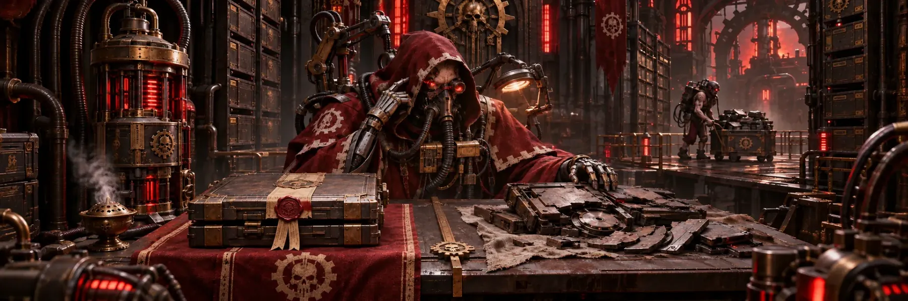
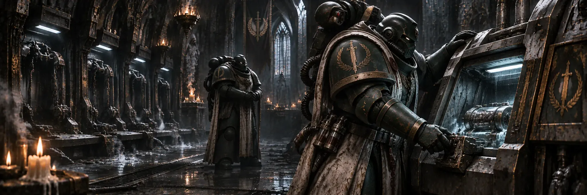
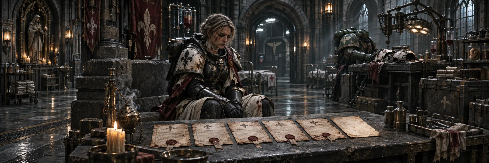
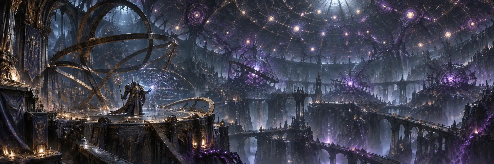
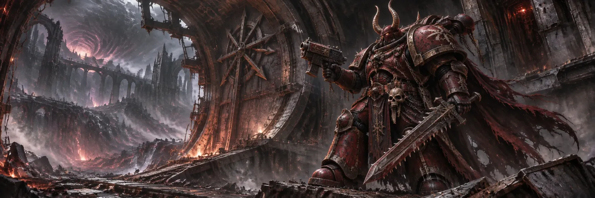
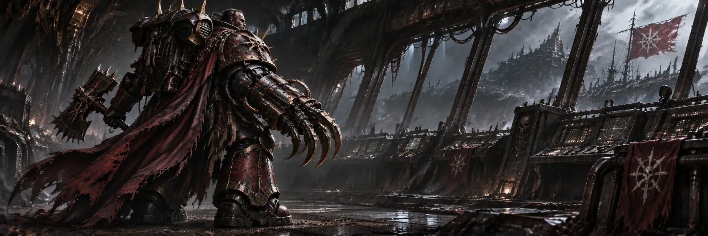
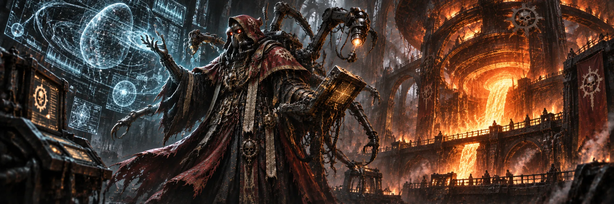
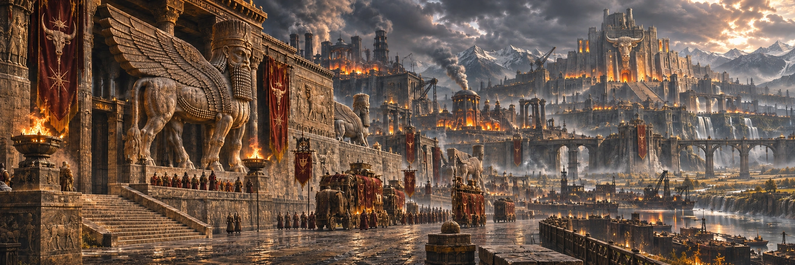

七、他者的战史
灰炉防线：克里格人的撤退令（约850.M41）

〔灰炉北侧阵地·联军通信残片〕
第一夜，克里格人在矿渣里挖了三道战壕。第二道战壕的沙袋被炮风吹散，他们改用碎矿石。费尔萨姆-9送来的图纸没有标出塌陷的地层；一名工兵带着测距仪从废弃排水管道爬出来，另一人没有回来。
〔东侧裂口·出击前〕
灰烬遗忘骑士抵达时，死亡骑兵正在给坐骑戴防护面具。隐修会军官询问东侧能守多久。克里格军官递给他炮兵射击表，上面有弹药、风向和射界，没有预计坚守时间。
第一次冲锋未到达裂口。第二次有七骑穿过烟尘。第三次之后，东侧枪声停止了片刻，隐修会得以进入控制井。
稳定器反转后，主通道塌陷。克里格工兵打开排水支路，灰烬遗忘骑士带着两名受伤的凡人士兵最后通过。
机械教：费尔萨姆-9与两份报告

〔机械教封存报告·850.M41〕
灰炉稳定器：损失。回收数据：不完整。护教军人员：待复核。非登记阿斯塔特基因信号：发现。后续检索权限：拒绝。
〔费尔萨姆-9私人附页〕
费尔萨姆保留了一块已经不能运行的控制板。数年后，他在另一座铸造世界被问及灰炉技术为何没有上缴。他把损毁的控制板放在桌上，回答说：原件留在灰炉。
那名询问者想知道谁下令摧毁原件。费尔萨姆没有给出名字。
隐修会此后曾收到一批无署名的替换轴承。轴承规格恰好适用于余烬号一台老旧的辅机，但货单写的是民用采矿设备。遗迹铁匠没有把这笔货物登记为机械教援助。
更早的另一份机械教失踪舰报告仍存于铸造世界的残缺数据库。探测舰、装置、失踪人员均有记录。希芙拉不在其中。两份报告隔着数千年，保存于不同数据核心，从未合并。
暗黑天使：未签收的移交令

811.M39，《无影之手》。一名被俘的堕天使承认曾向第一军团开火，却拒绝承认另一项指控。暗黑天使要求将他带走。隐修会要求先留下完整证词。
十七分钟里，没有人移动俘虏。两名战士各自打开了武器保险。最后，主团使者将移交令放在桌上，带队离开。
签收处至今空白。
745.M41，暗黑天使抵达格伦霍姆时，静滞舱已经空了。他们在邻近星域搜查了六个月。隐修会在那六个月里停止了外围伤员转运。
〔祸临之地·无署名外围记录〕
三名暗夜骑兵与五名余火守卫焚毁外围中继站，未参与巴尔萨萨率领的第五连主战场行动。一名守卫失联。没有来自第五连的确认回讯。
狮王归来、宽恕部分昔日流散者的战报抵达金穹。伊瑟林让人取出《无影之手》的封印卷。卷宗摆在桌上九天，未被开启。
第十天，奥瑞克送来一张旧金属片：那名俘虏还有证词未录完。 伊瑟林把它压在卷宗上。追迹者已在星海另一端搜寻流散者，隐修会却还握着一份拒绝交出的供词。递交原体复核的文书写好了，航路栏空白。
其他第一军团血脉：四封未寄出的信
赦免天使。 奥瑞克曾是其中一员。他在与钢铁勇士的战斗后被隐修会救下，留下来担任沉渊告解者。某次旧式识别讯号经过余烬号，他认出了赦免天使的编码，却没有要求舰长回讯。舰长仍在航志里写下了他的名字。
复仇天使。 一次共同战区的火力协同记录仅存两页。第一份写“左翼已清”，第二份写“目标已离开”。隐修会的战后档案里，没有被移交的俘虏。双方不交换堕天使情报。
圣骨天使。 一支路过的舰队曾向陌生的阿斯塔特舰只要求确认血统。余烬号关闭了舰桥照明，转入废墟带。对方没有追击。是否识别出第一军团徽记，无从查考。
密教天使。 两次加密讯息送出，均无回讯。第二次发送后，通讯员要求撤回第一封。伊瑟林没有批准。
帝国行政与国教：一支返航的布道舰队
帝国的死亡登记没有被撤销。三支侦查舰队留下了三组不同的希芙拉外围坐标。没有一组能在后来的航图中复现。
753.M41，枢机主教卢修斯·圣言在被干扰的星语阵列前跪了三个小时。舰队随后返航。他在泰拉出版了有关帝皇沉默显圣的著作。
舰长要求购买一本。熔炉祭司拒绝。两个月后，书还是出现在舰上食堂的储物柜里，扉页写着一名凡人厨师的名字。
审判庭：空缺的调查人
〔边境审讯摘录·无署名〕
被问者声称曾见一艘没有帝国登记的阿斯塔特舰只在战区外围回收伤员。审讯者问舰徽。被问者说舰体烧得太黑，看不见。
审讯者继续问，为什么陌生战士没有带走伤员的证词。被问者说，他们把证词交给了伤员本人。
卷宗最后一页是未填的转呈表。没有审判官的签押。
另一份记录中，某审判庭联络官曾要求机械教交出灰炉事故报告。费尔萨姆-9提交了已封存的公开页。此后是否有正式调查，隐修会没有得到消息。余烬号另存一份未署名的舰内航路记录，标有巡逻间隙与档案终端，未记载公开交战。

死亡守望：兽人堡垒内的另一支小队

〔维洛斯·死亡守望战后报告／622.M41〕
斩首任务完成。协同单位身份不明。其撤离方向与我方不同。
黑剑的归航记录只写：外军掩护，未交换呼号。 那块第一军团旧记录板没有出现在死亡守望的缴获清单中。
941.M41，特拉提翁监视站又记下一支拒绝回答的未知单位。该页没有引用维洛斯的战报。


灰骑士：阿格里斯裂谷
灰骑士撤离后，隐修会将参与阿格里斯裂谷行动的人分批隔离。名单没有在两支部队之间交换。奥瑞克为其中一名失乡骑士送回断剑；他没有留下谈话记录。
一名矿道女孩等了很久，才见到随军运送净水和药品、从裂谷归来的父亲。那名凡人运输员记得女儿的名字，却已经不记得她的生日。
〔巡礼骑士军械簿〕
阿格里斯裂谷所留长戟一柄；未授予使用权。封存栏与归还栏的印记不同。
战斗修女：第六个空名

051.M42，熵火神殿的牢笼中关着七名战斗修女。只有一人活着离开，声带已毁。遗迹铁匠找回其中五名失踪者的姓名，另一人只剩一张空白纸。
幸存者没有在希芙拉宣誓加入阿斯塔特战团。她暂住石廊外的疗养区。有人试图给她换上隐修会的灰绿衣袍，她拒绝了，仍穿修补过的修女战甲内衬。
后来一支帝国舰队请求核对修女伤亡名册。隐修会没有回应。幸存者带走的仍是那张空白纸；石廊的“碎律修女”名下另有一册，记录从此处开始领诵的凡人。
灵族：未译出的短讯

M37，井下监听捕获一段不足一秒的回波。信号没有留下可供翻译的语言。记录员在空白栏写：似乎有人路过。
阿历克斯曾要求重新监听同一频段。监听持续了三个标准周，什么也没有收到。
仇敌：不同战争留下的名字
变途者与卡利基努斯。 两次三伪星之战留下烧毁的伪星、失踪的战士和外泄的数据。卡利基努斯两次逃脱。第二次撤离影像里，他说了一个词：回声。

猩红屠戮、无情者克拉能与休伦·黑心的势力。 075.M42的希芙拉突袭由临时混编集群发动。休伦方面提供舰船与兵力；克拉能进入井口区域。隐修会记录他在井口被终结，外部战史中有关其命运的矛盾未消失。交易最后一页被焚毁。


追迹牧师以撒亚。 他属于第一军团血脉，却在隐修会的警戒名单上。塞维林·断索的案卷里留有他的斥责。没有任何一方宣布公开开战。

钢铁勇士与卡拉恩。 黑铁条约后，卡拉恩仍然在逃。Σ-7留在静滞地库；一支失乡骑士小队再未恢复满编。奥瑞克早年遭钢铁勇士囚禁的记录与卡拉恩的战役不在同一年代，石廊没有把两次灾难合成一场复仇。

黑暗机械教与萨拉米斯·熵炎。 熵火神殿的数据库被覆盖，萨拉米斯失踪。那七名战斗修女的牢笼仍保留在战利品清单中，未列作技术成果。

〔未定性接触·两次残缺记录〕
567.M34，一支身份未明的信号在希芙拉外围短暂停留。该页混在灾后失踪者的通讯残本里，呼号栏为空。
941.M41，特拉提翁监视站记录另一支拒绝回答通讯的陌生单位。卷宗没有名称。阿历克斯后来把两张纸放在同一处封存架上，没将它们订在一起。

遗落的世界
第一章 · 断绝的航路

567.M34，帝国航图出现厄声裂隙。发往该方向的呼号从未收到回讯。
此后的数个千年间，帝国曾多次修订裂隙附近的航图。失联世界被移入独立名录，其行星类别、什一税等级与最后确认的坐标仍沿用旧日记录。
阿瓦隆与纳拉姆均位列其中。
阿瓦隆是一颗古老的农业世界，纳拉姆则以地下矿藏、冶金设施与世代居住于矿区的矮人氏族闻名。
两颗行星分属遥远的星系，彼此之间没有已知的航路。它们失去帝国联系的确切年代也已不可考。
帝国的征税名录至此中断。
风暴彼岸，诸王仍在加冕，熔炉仍在燃烧。
第二章 · 阿瓦隆
AVALON
一、漫长的秋日
阿瓦隆的秋季长达数月。
卡里多尼亚古林自北方山麓向南延伸，横跨大陆上数个王国的疆界。金黄的山毛榉、深红的槭树与古老橡树林覆盖丘陵，河流穿过层叠的秋叶，汇入大陆腹地的湖泊。
阿尔比恩的王室领地位于这片大陆中央。王国北接卡里多尼亚，西部的阿登林地保留着诸侯世代相传的猎场。石砌城堡沿河谷而建，古道穿过森林，将各处领地与修道院连接起来。
南方的赫斯珀里得斯以果园闻名。秋收之后，商旅携苹果、蜂蜜、果酒与修士抄写的书籍前往诸国宫廷。
赫斯珀里得斯的修士为每棵古老果树保留着独立的名称。其中几棵树只开花而不结果，却从未被砍伐。
修道院的账册将它们列于亡者名下。
秋收之后，修士会将当年最先成熟的果实放置于教堂外的石桌。这些果实不进入祭坛，也不由修士食用。
阿瓦隆的诸国形成于帝国行政体系瓦解之后。地方驻军与管理粮仓的家族取得世袭土地，失去维护的农业机械渐渐被水磨、畜力与铁制农具取代。曾经属于行星总督的行政辖区，在后世成为诸侯的封地。
旧日帝国纪年逐渐消失，各地修士开始以君王在位的年代记录收成、婚姻、战争与圣徒祭日。
在现存诸国的编年史中，最早的岁月被统称为旧王时代。
关于那个时代，最为古老的记述保存在格拉斯顿。
二、格拉斯顿与旧王之冠
格拉斯顿坐落于阿尔比恩境内的一座湖畔。
修道院的圆拱石厅始建于早期诸王时代，后世增建的哥特式圣堂高踞湖岸。历代主教被安葬于回廊之下，石棺朝向庭院中的橡树林。
这里保存着一部古老的诸王编年史。
书中记载，旧王曾在露天石坛前接受六位君主的效忠。旧王的旗帜立于石坛中央，另外六面旗帜分列两侧。诸王依次奉上佩剑，并在帝皇名义之下订立誓约。
编年史的最后一篇关于旧王的记述，发生于一个异常漫长的秋季。
那一年，旧王离开宫廷，沿阿登古道进入卡里多尼亚。随行者包括数名诸侯、一位教士及负责保管王旗的骑士。
翌年春天，随行骑士将旧王的旗帜送回格拉斯顿。
王冠没有随之归来。阿尔比恩历代君王所戴的王冠，皆为后世重新铸造之物。
后来的阿尔比恩王室宣称，旧王在启程之前，已将统治诸侯的权力托付给王室先祖。
格拉斯顿承认这项继承权，却始终保留编年史中旧王尚未死亡的版本。
加冕前夜，新王必须卸去甲胄，在格拉斯顿的圣堂中独自守夜。翌日黎明，主教为其涂抹圣油，授予佩剑、权杖与王冠。
君王首先向帝皇宣誓，随后承诺遵守旧王所立下的诸侯誓约。
王室曾试图将卡里多尼亚的一处圣林划入猎场。格拉斯顿的主教在议会中出示了那部编年史，指出旧王从未将此地授予任何世俗君主。
当时的国王最终撤回敕令。
那片林地至今未被划入王室疆域。
格拉斯顿的圣堂中，历代阿尔比恩君王皆有自己的纪念灯。
属于旧王的那一盏，从未熄灭。
三、诸侯的旗帜

秋收之后，阿尔比恩的红白王旗便会离开宫廷。
君王携廷臣、教士与侍从巡行各地，在王室城堡接受诸侯觐见，审理土地继承与赋税争端。偏远领地有时需要等待数十年，才能再次迎来王室的巡行。
阿登的一次王室议会，曾因蒙福尔与洛林两大家族的旗帜座次而中断。
蒙福尔家族世代承担王室军职，要求将家族旗帜悬挂于王座右侧。洛林家族则出示格拉斯顿抄写的古老文书，宣称其先祖在旧王时代便享有这一位置。
双方侍从在大厅中拔剑。
君王命人撤下两面旗帜，将它们悬挂在同一根横梁之上，并命两家于翌日共同护送王旗前往猎场。
蒙福尔保留军职，洛林保留旧有礼仪。
自那以后，两家的旗帜每逢王室议会皆悬于同一根横梁。蒙福尔的后裔至今拒绝为这根横梁支付修缮费用，洛林的书记员则将当年的裁决抄入每一代家主的继承文书。
并非所有争端都能止于议会大厅。
阿尔比恩曾有一位君王强行征用主教领地，格拉斯顿随即撤回对他的祝圣。数位诸侯拒绝响应王室征召，其余家族则各自召集封臣。
那几个冬季，修道院的收容名册远长于往年。
许多失去土地的农民成为新的佃户，衰败家族的城堡则被其他贵族接管。直到下一位君王在格拉斯顿接受加冕，诸侯才重新确认彼此的领地边界。
阿登的一座礼拜堂中，仍然安葬着分别效忠于两位敌对领主的骑士。
他们的石棺共用一座祭坛。
每逢亡者祭日，修士会为双方同时点燃蜡烛。
四、至高圣王与骑士巡礼

阿瓦隆的教士称帝皇为至高圣王。
圣堂的彩绘玻璃描绘着群星之上的王座、展开双翼的神圣鹰徽与众多披甲圣者。诸国的修道院分别保存着圣徒传记，其中最古老的人物早于任何现存王室。
阿尔比恩西部的教区崇敬徒步穿越诸国的圣者。卡里多尼亚边缘的修道院则保存着关于隐士、殉道骑士与守城者的故事。
每逢深秋，朝圣者沿林间古道前往格拉斯顿。
农民带来亲人的姓名与自家果园的供品，贵族骑士在祭坛前放下佩剑。修士将远行者的姓名、来处与祈愿记录于朝圣名册。
其中一些姓名，后来出现在诸国的骑士长诗之中。
洛林家族的古老诗篇记载，一位年轻骑士曾在完成格拉斯顿的巡礼之后，追随白鹿进入卡里多尼亚。
他在林中度过了整整一个秋季。
归来时，他带着折断的佩剑，却没有携带任何猎获。此后，他将盾徽上的王冠改为一枝橡木，并终生拒绝参加王室秋猎。
格拉斯顿保存着另一种记述。
在那部修士编年史中，骑士从未返回洛林，而是在湖畔成为一名守门人。家族盾徽的改变，则发生于他的弟弟继承领地之后。
两个版本都被后世抄写下来。
阿瓦隆的宫廷诗人沿袭着这样的传统。白鹿、无名骑士、林间孤堡与失落王冠反复出现在长诗之中，故事随着贵族婚姻、骑士巡礼与朝圣道路传往不同王国。
世代承担王室军职的蒙福尔家族，在阿登的家族礼拜堂中保存着一座早于现存家族谱系的石棺。
棺盖上没有死者面容，只有一头伏卧于长剑旁的狮鹫。
家族世代驯养狮鹫，年轻继承人在接受授剑仪式之前，必须来到石棺前完成第一次宣誓。
蒙福尔的盾徽亦取自这座石棺。
直到今日，骑士队伍经过格拉斯顿时，仍然会将带有狮鹫纹章的旗帜留在圣堂之外。
五、古林之主

卡里多尼亚深处生长着高大的古橡树。
漫长秋季中，有些橡树始终保持苍绿色的树冠，周围却堆积着厚重的金色落叶。河岸与林间空地散布着古老石阵，其石块没有神像，也没有可以辨认的文字。
附近村落在石阵之间交换婚姻誓言，并为亡者留下石块。
秋收结束之后，居民将苹果与蜂蜜放置于林缘。格拉斯顿的教士曾禁止这一习俗，赫斯珀里得斯的修士却始终保留着相似的传统。
古林中的木质生命会在落叶间穿行。
在卡里多尼亚边缘，耕地与森林之间往往保留一条从不采伐的林带。村民修剪其中靠近农田的树枝，却不会越过最古老的橡树。
枯林女巫出现在许多地方传说中。
阿登的骑士长诗曾记载，一位远行者在林间向枯林女巫立下誓言，并以自己的佩剑交换归途。
北方教区的布道文则禁止向她们询问亡者的下落。
格拉斯顿的早期编年史中保存着一段关于旧王巡行的文字：
是年秋，王巡行至西境。诸侯皆至，唯古林之主未赴王召。
抄写员在页边列出了数种解释。其中一位修士将古林之主列入旧王时代的诸侯谱系，另一位则在其姓名旁绘制了一枝橡木。
关于秋日号角的记述，也保存在格拉斯顿。
阿登猎人结束当年最后一次秋猎时，会吹响号角，召集仍留在林间的同伴。
偶尔，森林深处会传来回应。
回应的号角与猎人使用的曲调相同，却总在最后一个音节之前停顿片刻。
按照古老习俗，听见第二次号角的猎人必须收起旗帜，停止追猎，沿原路返回。
格拉斯顿藏书室保存着一份法师手稿。
其作者曾在卡里多尼亚南缘修建塔楼，用观星仪、日影与历书记录号角出现的方位和时节。数年的观测被绘制于羊皮纸上，记录之间夹杂着对植物、动物与季节变化的研究。
手稿最后一页画着一片完整的橡树叶。
旁边只有一句批注：
此声不在历中。
阿瓦隆的法师各有师承，真正能够施展秘术的人始终稀少。格拉斯顿允许受到认可的法师传授知识，却严禁向黑暗诸神献祭。
修道院的审判名册中，记录着曾因混沌腐化而被取缔的学派。
那位研究秋日号角的法师不在其中。
他的塔楼后来成为林间朝圣者歇息的地方。
第三章 · 纳拉姆

NARAM
一、两河与无冠纪元
纳拉姆南部的两条大河发源于东方群山。
肥沃的黑土沿河流展开，灌溉水渠连接农田、城镇与工业聚居地。河谷之外逐渐变为干旱岩原、盐地与蕴藏丰富矿藏的高山。
东方火山之间，矮人氏族世代开掘矿井。
巨大的石柱支撑着地下厅堂，古老矿道深入岩层。帝国时代留下的先进设备早已大多损坏，氏族却保存了冶金、铸造、蒸汽动力与重型机械制造的知识。
尼姆鲁德建立于两河之间的高地。
每年秋季，来自北方扎格罗斯的商队会赶在降雪之前抵达王城。兽皮、猛犸象牙与高地矿石被卸在市场中，换取矮人制造的金属器物与机械构件。
再过数周，北方山道便会封闭。
尼姆鲁德最古老的泥板将帝国统治时期称为无冠纪元。那时的氏族档案尚无王室谱系，只记录矿产、劳役人口与分配给各处工坊的物资。
失联之后，最先掌握水源与大型冶炼设施的氏族逐渐取得统治权。
长渠王朝的君王开凿贯穿群山的水道，将高地水源引入两河平原。沿途修建的农业聚居地与工业城镇，成为尼姆鲁德最早的行省。
长渠王朝早期的石碑刻有帝国双头鹰。
到了王朝晚期，同一条水渠旁新立的石碑之上，已经出现头戴角冠的公牛。
二、黑暗之父与倒冠之年

哈苏特的第一座神庙建立于地下。
据大神庙保存的泥板记载，最初侍奉黑暗之父的祭司曾进入一座废弃深井。
矿井早已停止运转。
他在岩层深处吹灭火把，依照梦中获得的指示完成祭仪。随后，一道低沉的声音从岩壁之后传来，仿佛巨牛正在地下呼吸。
祭司离开矿井时，手中握着一块无法冷却的黑色金属。
神庙最古老的颂文将那道声音称为黑暗之父的呼吸。
哈苏特崇拜由此在矿业氏族内部传播。
受到混沌赐福的工匠掌握了异于寻常冶金术的铸造技艺。原本废弃的炉体重新燃烧，祭司能够借助黑暗仪式改变金属的性质，并从亚空间中获取力量。
长渠王朝晚期，君王下令收回由异端氏族控制的矿井与水源。
神庙拒绝交还。
冬季尚未结束，运往王室工坊的煤炭与金属便被截断。依附神庙的工业氏族停止缴纳贡赋，王室派往矿区的官员遭到驱逐。
尼姆鲁德的大神庙最终关闭了通往王宫的水渠。
信奉哈苏特的氏族拥立新王。旧王室失去水源、工坊与大多数附属氏族的支持，在随后的内乱中覆灭。
后世铭文将这一年称为倒冠之年。
帝皇的神像被推倒，旧国教圣堂遭到亵渎。王室石碑上的双头鹰被工匠凿去，原有的神圣图案被哈苏特的牛首与火焰取代。
仍然忠于帝皇的教士遭到迫害，残余信徒转入地下。
新王在神庙接受角冠，建立白石王朝，并宣布黑暗之父为尼姆鲁德的国神。
祭司将哈苏特的创世神话刻于七块泥板之上。
其中记载，大地原为尚未锻造的矿石。黑暗之父以火焰塑造山川，以巨锤划分世间诸族。
君王承受冠冕，祭司承受智慧，奴仆承受锁链。
自倒冠之年以后，哈苏特的名义进入王室敕令、婚姻契约、土地文书与劳役名册。
神庙的火焰再未熄灭。
三、四方之王与苍白宫殿
白石王朝从东方群山开采大量苍白石材，在旧城之上筑起宏伟的王室台基。
宫殿内部的连续浮雕描绘历代君王驾驭战车、狩猎巨兽、征服城邦与接受附属行省的贡赋。
君王头戴高冠，身形远大于周围臣民。
神圣树的图案反复出现于宫廷大厅。
翼人祭司与鸟首侍者分别立于树干两侧，手持祭器。树冠上方悬浮着哈苏特的牛首神徽，根须则深入石壁下方雕刻的地下火海。
白石王朝早期的浮雕仍然保留着树叶与果实的形态。
后来，枝干逐渐被雕刻为近似金属的规则纹样。
一份王室铭文记载：
我，四方之王，开群山之腹，引两河之水，使诸族迁于我所指定之地。吾之宫殿高于旧王，万炉皆为黑暗之父燃烧。
白石王朝将被征服的城邦划入行省，迁移其人口，并在两河之间建立新的农业与工业聚居地。
一座城市的旧名可以从王室铭文中消失，其居民却仍然出现在数百里之外的矿业名册中。
书记员使用滚筒印玺确认这些迁移敕令。王室的牛首、氏族的神兽与行省总督的姓名，被依次压印在泥板之上。
白石王朝末期，王室试图将大神庙掌握的矿井收归君王所有。
祭司拒绝为王室继承人举行祝圣仪式。
此后的数代君王先后改变宫廷礼制，最终由双冠王朝确立新的加冕制度。
新王必须接受两顶冠冕：一顶来自世俗王室，另一顶来自哈苏特神庙。
缺少任何一顶，均不能启用四方之王的正式印玺。
现今双冠王朝的君王仍然沿用白石王朝的宫殿。
旧王的姓名已经被反复凿除，浮雕中的神兽与翼人祭司却始终保留着原来的面容。
四、拉玛苏与神圣血裔
尼姆鲁德最宏伟的宫门由巨大的拉玛苏石像守卫。
它们头戴多重角冠，具有庄严的人面、强壮的牛身与层叠鹰翼。石雕的五足从正面呈现静立之姿，从侧面望去则仿佛正在迈步。
楔形铭文覆盖石像下方的台基。
在尼姆鲁德，这些形象并非全部来自工匠的想象。
大神庙内廷栖息着两头极为古老的拉玛苏。
它们的面容近似苍老的矮人君王，巨大的牛身覆盖厚重皮毛。历代王室为其奉上金属头冠、项饰与刻有君王尊号的祭器。
它们能够言语，也能够感知祭司无法理解的事物。
尼姆鲁德历代君王在接受角冠之前，都会进入内廷寻求拉玛苏的祝福。
白石王朝的一位君王曾在内廷等待整整一日。
拉玛苏始终没有开口。
那位君王最终依照原定礼仪接受角冠，命书记员在王室铭文中记录祝圣已经完成。
数年之后，他的姓名被从宫殿石壁凿去。
拉玛苏依然居住在原来的内廷。
哈苏特的半牛血裔则生活于神庙周围的独立领地。
他们具有矮人的上身与巨牛的躯体，其形态源自氏族血脉所承受的混沌变异。祭司将这种变化奉为黑暗之父的特别赐福。
关于最早血裔如何出现，神庙谱系中没有统一记述。
有的家族声称先祖曾在地下圣所获得哈苏特印记；另一些家族的泥板，则直接将血裔的降生记为神迹。
受到神庙承认的半牛人将被列入独立谱系，自此不再完全服从原有氏族的世俗律法。
他们守卫内廷、护送神像，并承担哈苏特教义规定的宗教裁决。
每逢大神庙祭典，半牛人的队伍行进于王室之前。
更远的东方火山之间，栖息着翼火神牛。
它们展开双翼时，灼热的气流能够卷起覆盖山地的炉灰。白石王朝曾为这些巨兽修建神庙，留下大量描绘神牛与君王的浮雕。
历代王室皆以驾驭翼火神牛为无上荣耀。
然而在王室现存的狩猎铭文中，真正完成这一壮举的君王只有寥寥数人。
每一代国王的宫殿，却都刻有自己驾驭神牛的形象。
五、万炉之城
尼姆鲁德大神庙的下层深入王城石台。
高阶祭司在这里研习天象、冶金与黑暗秘术。随着混沌力量在体内积累，他们的身体会逐渐石化。
神庙大厅安置着历代完全石化的祭司。
他们依然佩戴生前的角冠，双手握着权杖与祭器。年轻侍徒每日穿过这些石像，在导师的神龛前奉上祭品。
王室的重要占卜也在此举行。
没有人会将那些石化祭司视作普通的死者。
大神庙的地下铸造厅由巨大的石柱支撑，金属管道穿过拱形穹顶。炉体雕刻哈苏特的印记，机械外壳以神兽形象与氏族铭文装饰。
在少数受到祝圣的金属造物之中，束缚着来自亚空间的恶魔。
负责黑暗铸造的祭司将造物的姓名刻入泥板，并在其所属工坊的门前悬挂神庙印记。其他工匠不得擅自进入。
天尚未亮，王城贡赋仓库的书记员已经开始工作。
一块来自东方第七矿井的泥板被放在桌前。
该矿井的金属配额已连续三个季度未能完成，负责监督劳役的氏族却申请增加粮食供应。
书记员将新的劳役人数刻入泥板，划去上一季度死去的人名，并在尚未补足的配额旁留下双冠王室的印记。
当日送往矿区的车队，比上月多了两节运载劳役者的车厢。
仓库之外，王城的石砌街道上，北方雇佣武士正在等待领取军饷。
他们带着扎格罗斯的家族旗帜，在住处供奉不同的混沌神徽。神庙准许他们依照本族习俗献祭，条件是不将祭坛设于哈苏特的圣所之内。
其中一名北境领主此次受雇结束后，将携带新购置的甲胄与铸造工具返回山地。
秋市过后，他的队伍便会离开尼姆鲁德。
而此时的王城，已经开始准备黑暗之父一年中最重要的祭典。
祭典前夜，主要炉殿依照神庙敕令停止生产。新的火种由半牛人护送，从大神庙沿石砌大道送入各处工坊。
劳役者排列于炉殿门前，等待熔炉重新点燃。
按照神庙历法，这一天不计入任何奴隶的服役期限。
六、扎格罗斯的长冬

越过尼姆鲁德北方行省的最后一处水渠，群山逐渐取代两河平原。
扎格罗斯的雪山、针叶林与广阔冻原向大陆北部延伸。人类世代居住于山间石堡与木质长厅之中，沿高原河谷建立自己的领地与王国。
这里的年代以长冬计算。
一个领主经历了多少次大雪，他的名字便在家族长诗中保留多少个冬季。
灰庭是一座建立于山脊之上的古老石城。
城中的哈尔家族世代保管山地集会场的誓约石。每逢冰雪消融，来自附近诸国的领主聚集于石坛前，裁决血仇、牧场归属、通行权与家族继承。
誓约见证者不携带文书。
他们背诵祖先传下的律法，并逐一宣读当日在场的家族姓名。
曾有一位领主在集会后拒绝履行血仇赔偿。翌年，他依然率领众多武士来到灰庭，哈尔家族却撤去了属于他的座席。
直到他的继承人归还争议土地，那个家族才重新获得发言权。
灰庭城外的河谷是猛犸群南下的必经之地。
哈尔家族长厅最古老的木柱上，刻有河流、山口与成群迁徙的巨兽。年轻猎人在第一次远行之前，必须能够辨认那些图案。
从木柱底部向上，还能看到后世猎人增刻的路线。
高原北部的冰雪曾改变猛犸群的迁徙方向。新的道路被刻在旧图案旁边，早已不再使用的山口却没有被削去。
每当冬季来临，归来的猎人会将兽皮铺于长厅，铁匠在炉火旁修复旧甲，诗人则开始准备当年的先祖之宴。
长厅中央，属于亡者的座席仍然空着。
七、亡者长诗与黯誓
扎格罗斯的历代领主被安葬于群山之间的石冢。
墓室深入岩层，石棺旁放置死者的甲胄、佩剑、饮器与家族旗帜。墓壁上的符文记录亡者生前效忠的领主，以及他们向黑暗诸神所立下的誓言。
哈尔家族的先祖长诗中有这样一段：
第七个长冬，先祖带着他的族人越过群山。那时石冢尚无姓名，诸神已经认识了他。
扎格罗斯人信奉血神、变幻之主、腐朽之父与纵欲之主，也崇拜许多拥有地方神名的混沌存在。
他们在山巅建立祭坛，在长厅炉火前完成献祭，并以获得黑暗诸神的赐福为荣耀。
沃德家族的墓冢中，保存着一位古老领主的石棺。
墓壁将他描绘为头戴王冠、身披黑甲的武士。随着浮雕所记载的年代推进，他的身躯逐渐高于其他人物，肩背生出新的骨甲，面容也不再具有人类的形态。
最后一幅浮雕上，那位领主已经展开双翼，站在群山之上。
沃德的诗人称他已进入诸神的领域。
石棺中没有遗骨。
扎格罗斯的古老武士家族世代传承黑铁甲胄。
接受甲胄的继承者须在炉火、先祖与黑暗诸神面前立下誓言。专门负责见证誓约的人记住完整誓词，再将武士姓名刻入家族石碑。
其中最为古老的一支传统，被称为黯誓。
黯誓武士的誓约可以延续至领主死后，也可以由后裔继承。那些背弃誓言的人，其姓名会被从先祖长诗中删除。
吟诵者不得改变原有的格律。
他们必须在原本属于那个姓名的位置保留一段停顿。
灰庭的哈尔家族自第五代领主以来，从不在亡者祭日吟唱含有被除名者的诗篇。
沃德家族则沿袭旧例。
他们相信，先祖有权在长诗的停顿中为背誓者求情。
沃德的一位年长诗人曾在先祖之宴中停止吟诵。按照在场者的记述，当他念至被除名者的位置时，大厅另一端传来了一个完整的姓名。
声音出现的位置没有坐人。
后来，他拒绝再为领主主持亡者祭日。
家族巫者询问那道声音是否来自祖先，或是黑暗诸神降下的征兆。
诗人回答：
那不是我们诸神的声音。
这句话被后来的吟诵者补入诗篇，却始终不属于任何一个固定的格律。
能够使多个黯誓家族共同效忠、并向黑暗诸神立下至高誓约的领主，将获得黯誓暴君的称号。
他们的长厅悬挂先祖旗帜、巨兽颅骨与刻有神徽的兵器。
诗人记录他们所接受的赐福，也记录他们最后一次离开长厅的日期。
至于死者将前往怎样的神域，各个家族传下的长诗并不一致。
八、通往两河的山道
扎格罗斯的南方古道沿峡谷进入尼姆鲁德的北部行省。
山口之下分布着数座历史悠久的集市。城门一侧雕刻哈苏特的牛首，另一侧则刻有北境家族的混沌符文。
矮人商人在石砌工坊中出售甲胄、铁器与机械构件。北境商队带来的兽皮、象牙、牲畜与矿石，则由尼姆鲁德的书记员登记入册。
当地祭司承认扎格罗斯诸神的存在，却不允许在哈苏特的圣所中供奉其他神明。
北境领主进入行省之后，须遵循大神庙规定的礼仪；离开行省，便重新受各自家族的誓约约束。
灰庭的一份旧契约同时使用楔形文字与扎格罗斯符文。
按照尼姆鲁德的铭文，哈尔家族必须世代向四方之王提供牲畜与军事人员。
但北境符文所记录的誓约，只持续至当时签署契约的领主死去。
每逢灰庭更换领主，尼姆鲁德都会派遣书记员，携带那块泥板前往哈尔的长厅。
新的领主可以重新宣誓，也可以要求改变贡赋数量。
迄今为止，泥板背面已经刻满历代领主的印记。
秋市结束之后，最后一批商队沿山道返回尼姆鲁德。
关隘的守卫清点通过的人口与牲畜，收起刻有双冠王室印记的通行文书。
北方各处长厅准备过冬，南方王城开始清点新的贡赋。
第一场大雪覆盖山口。
两河平原的炉火仍然彻夜燃烧。
卷末编纂附记
格拉斯顿抄本记有秋日号角。
尼姆鲁德的神庙泥板将矿井深处的低吼称为黑暗之父的呼吸。
扎格罗斯的先祖长诗则保留着一段不属于原有格律的声音。
三处地方记述年代各异，亦无共同的纪年依据。其相似之处，或为地方传说偶合，或为各自文献传承中的异文。
本卷不作合并考订。
帝国航图仍保留着阿瓦隆与纳拉姆失联之前的坐标。
567.M34之后，发往厄声裂隙方向的呼号，未有确认回讯。
FINIS
模型图鉴
以下为已定名的收藏清单。实拍图版待补录。
阿尔比恩王国
ALBION
- 圣誓剑卫 ×7
- 圣誓战鼓手 ×1
- 圣誓执剑官 ×1
- 圣誓百夫长 ×1
- 狮鹫骑士 ×3
- 巡猎狮鹫 ×1
- 圣典法师 ×1
- 圣典侍徒 ×2
- 辉光圣仪 ×1
阿瓦隆原生生物
FAUNA OF AVALON
- 荆棘怨灵 ×3
- 枯林女巫 ×1
- 穴居劣鬼 ×7
尼姆鲁德神权王国
NIMRUD
- 尼姆鲁德铳卫 ×4
- 尼姆鲁德斧卫 ×3
- 炼狱军督 ×1
- 炼狱执旗官 ×1
- 炼狱战鼓手 ×1
- 哈苏特行刑者 ×3
- 钢铁恶魔 ×1
- 铸炉侍从（钢铁恶魔） ×4
- 震地臼炮 ×1
- 食人魔苦役 ×1
- 鞭刑监官 ×1
- 熔狱火炮 ×1
- 铸炉侍从（熔狱火炮） ×4
扎格罗斯诸族
ZAGROS
- 黯誓暴君 ×1
- 战争猛犸 ×1
- 荒原掠夺者 ×5
- 裂齿猎犬 ×3
- 黯誓武士 ×3
- 黯誓执旗者 ×1
- 黯誓唤战者 ×1
- 黯誓驭兽者 ×1